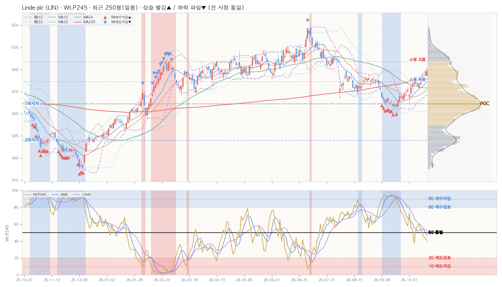

| 구분 | 가격 | 현재가 대비 | 거래 비중 | 봉우리 높이 |
|---|---|---|---|---|
| ▲ 저항 — | 현재가 위 거래 봉우리 없음 · 2년 최고가까지 +10.0% | |||
| ■ 소화 중 — | 현재가 ±0.25×ATR 안 거래 봉우리 없음 | |||
| ▼ 지지 1차 | 461.14 | -7.5% | 14.3% | 0.92 |
| ▼ 지지 2차 | 420.06 | -15.7% | 8.3% | 0.20 |
| ▼ 지지 3차 — | 현재가 아래 거래 봉우리 2개뿐 | |||
| ┄ 스윙 고점 (참고) | 508.89 | +2.1% | 피벗 3개 · 마지막 77봉 전 | |
| ┄ 스윙 저점 (참고) | 486.26 | -2.4% | 피벗 7개 · 마지막 96봉 전 | |
| 지표 | D 일봉 | W 주봉 | M 월봉 |
|---|---|---|---|
| Close | 498.43 | 498.43 | 498.43 |
| Chg% | ▲ +1.06% | ▲ +3.04% | ▲ +5.01% |
| SigNm | 28.6 | 31.9 | 40.7 |
| SigRk | 33.3 | 40.6 | 58.4 |
| PvN2 | 4 | 3 | 1 |
| WtAll | 46 | 52 | 64 |
nix_snapshot_market_temp_us.json (2026-10-16 · 읽기 전용 크로스 참조)| 창 | 5봉 | 12봉 | 22봉 | 54봉 | 120봉 | 245봉 | 컴포짓 | 주봉 참고 |
|---|---|---|---|---|---|---|---|---|
| 사분면 | 개선 | 개선 | 개선 | 지연 | 지연 | 개선 | 지연 | 지연 |
| RS-Ratio | 94.19 ▲ | 91.80 ▲ | 88.97 ▲ | 85.58 ▲ | 88.36 ▼ | 83.54 ▲ | 88.16 ▲ | 87.70 ▲ |
| RS-Momentum | 109.89 ▲ | 110.71 ▲ | 101.30 ▲ | 86.98 ▲ | 98.45 ▼ | 100.16 ▲ | 99.98 ▲ | 97.52 ▲ |
| Perf | Mac | Tcr.U | Tcr.D | Zc | BBs | PvN2 | Sts | Wt.P245 | SA.P245 | SA02.P245 | S122.P245 | S051.P245 | SU31.P245 | Inds.Sig | ||||||||||||||||||||||||||||||||||||||||||||||||||
|---|---|---|---|---|---|---|---|---|---|---|---|---|---|---|---|---|---|---|---|---|---|---|---|---|---|---|---|---|---|---|---|---|---|---|---|---|---|---|---|---|---|---|---|---|---|---|---|---|---|---|---|---|---|---|---|---|---|---|---|---|---|---|---|---|
| SigNm | SigRk | |||||||||||||||||||||||||||||||||||||||||||||||||||||||||||||||
| Date | T-Set | H | L | C | V | Chg% | DChg% | YTD | P5 | P12 | P16 | P22 | P54 | P120 | P245 | Cdl | 종합 | 단 | 중 | 장 | 5 | 12 | 22 | 54 | 5 | 12 | 22 | 54 | 12 | 22 | 54 | 12 | 22 | 54 | D | MA_Sts | C_Sts | EMC_Sts | .P | .J | Bar(P) | Ar | .P | .J | Bar(P) | Ar | .P | .J | Bar(P) | Ar | .P | .J | Bar(P) | Ar | .P | .J | Bar(P) | Ar | .P | .J | Bar(P) | Ar | D | D |
| 2026-10-16 | US100 | 502.14 | 492.74 | 498.43 | 2.0M | +1.1 | +0.0 | +16.2 | +3.0 | +5.0 | +6.5 | +7.9 | +4.2 | -2.4 | +11.8 | -11 | 5 | -11 | 10 | 11 | 0.6 | 1.6 | 1.9 | 1.9 | 0.2 | 0.3 | 0.3 | 0.3 | 1.6 | 1.8 | 1.8 | 0.2 | 0.2 | 0.3 | +4 | 🟥🟥🟦🟦🟦🟥🟥🟥 | 🟥🟥🟥🟥🟥🟥🟥🟥 | 🟥🟥🟥🟥🟥🟥🟥🟥 | 40.4 | 🔸 | █████ | ▼ | 20.8 | 🟥 | ██ | ▼ | 75.4 | 🔵 | █████████ | ↔ | 14.8 | 🆘 | █ | ▼ | 68.8 | 🔷 | ████████ | ↔ | 28.1 | 🔴 | ███ | ▼ | 28.6 | 33.3 |
| 2026-10-15 | US100 | 499.20 | 492.88 | 493.22 | 2.5M | +0.1 | +1.1 | +14.9 | +2.4 | +4.2 | +5.0 | +6.5 | -3.0 | -3.3 | +9.6 | 0 | 11 | -6 | 11 | 11 | 0.8 | 1.6 | 1.7 | 1.8 | 0.4 | 0.3 | 0.3 | 0.3 | 1.3 | 1.6 | 1.4 | 0.2 | 0.2 | 0 | +4 | 🟥🟥🟦🟦🟦🟥🟥🟥 | 🟥🟥🟦🟦🟥🟥🟥🟥 | 🟥🟥🟥🟥🟥🟥🟥🟥 | 43.0 | 🔸 | █████ | ▼ | 24.2 | 🟥 | ███ | ▼ | 77.4 | 🔵 | ██████████ | ▲ | 17.9 | 🅰️ | ██ | ▼ | 75.5 | 🔵 | █████████ | ↔ | 26.1 | 🔴 | ███ | ▼ | 31.1 | 33.9 |
| 2026-10-14 | US100 | 494.23 | 489.11 | 492.70 | 2.5M | +0.1 | +1.2 | +14.8 | +1.8 | +4.4 | +6.0 | +6.1 | -3.6 | -3.0 | +9.5 | 6 | 11 | -6 | 11 | 11 | 0.8 | 1.5 | 1.5 | 1.7 | 0.1 | 0.1 | 0.1 | 1.1 | 1.4 | 1.7 | 1.2 | 0 | 0 | 0 | +3 | 🟥🟥🟦🟦🟦🟥🟥🟥 | 🟥🟥🟦🟦🟥🟥🟥🟥 | 🟥🟥🟥🟥🟥🟥🟥🟥 | 44.8 | 🔸 | █████ | ▼ | 28.2 | 🔴 | ███ | ▼ | 77.3 | 🔵 | ██████████ | ▲ | 22.8 | 🟥 | ██ | ▼ | 78.2 | 🔵 | ██████████ | ↔ | 24.2 | 🟥 | ███ | ▼ | 32.4 | 34.3 |
| 2026-10-13 | US100 | 494.13 | 489.20 | 492.11 | 1.4M | +1.0 | +1.3 | +14.7 | +0.4 | +4.7 | +7.6 | +5.6 | -3.7 | -0.5 | +9.3 | -10 | 11 | -6 | 11 | 11 | 0.5 | 1.3 | 1.4 | 1.6 | 0.2 | 0.2 | 0.2 | 1.1 | 1.6 | 1.8 | 1.1 | 0 | 0.1 | 0 | +3 | 🟥🟥🟦🟦🟦🟥🟥🟥 | 🟥🟥🟦🟦🟥🟥🟥🟥 | 🟥🟥🟥🟥🟥🟥🟥🟥 | 48.5 | 📉 | ██████ | ▼ | 32.5 | 🟠 | ████ | ▼ | 77.0 | 🔵 | ██████████ | ↔ | 22.8 | 🟥 | ██ | ▼ | 78.1 | 🔵 | ██████████ | ▲ | 28.8 | 🔴 | ███ | ↔ | 36.9 | 42.6 |
| 2026-10-12 | US100 | 490.99 | 482.51 | 487.35 | 1.5M | +0.7 | +2.3 | +13.6 | +1.0 | +4.1 | +5.9 | +5.6 | -3.9 | -1.5 | +7.9 | -7 | 11 | -6 | 11 | 11 | 0.3 | 1.1 | 1.2 | 1.4 | 0.3 | 0.3 | 0.2 | 1.6 | 1.3 | 1.6 | 0.6 | 0 | 0.0 | 0 | 0 | 🟥🟥🟦🟦🟦🟥🟥🟥 | 🟥🟦🟦🟦🟥🟥🟥🟥 | 🟥🟥🟥🟥🟥🟥🟥🟥 | 53.9 | 📈 | ███████ | ↔ | 41.2 | 🔸 | █████ | ▼ | 77.4 | 🔵 | ██████████ | ↔ | 31.3 | 🟠 | ████ | ▼ | 81.3 | 🟦 | ██████████ | ↔ | 39.4 | 🔶 | █████ | ↔ | 41.0 | 48.1 |
| 2026-10-09 | US100 | 485.83 | 479.00 | 483.73 | 1.6M | +0.4 | +3.0 | +12.7 | +0.9 | +3.0 | +5.5 | +3.7 | -5.6 | -2.9 | +7.3 | -7 | 11 | -6 | 11 | 11 | 0.4 | 0.9 | 1.1 | 1.3 | 0.5 | 0.4 | 0.3 | 1.7 | 0.9 | 1.4 | 0.3 | 0 | 0 | 0 | 0 | 🟥🟥🟦🟦🟦🟥🟥🟦 | 🟥🟦🟦🟦🟥🟥🟥🟦 | 🟥🟦🟦🟦🟥🟥🟥🟥 | 60.7 | 🔷 | ███████ | ↔ | 55.1 | 🔹 | ███████ | ↔ | 75.4 | 🔵 | █████████ | ↔ | 52.9 | 📈 | ██████ | ↔ | 81.5 | 🟦 | ██████████ | ↔ | 49.7 | 📉 | ██████ | ↔ | 45.3 | 54.3 |
| 2026-10-08 | US100 | 486.67 | 480.22 | 481.70 | 2.1M | -0.5 | +3.5 | +12.3 | +2.6 | +3.6 | +4.2 | +2.8 | -4.9 | -2.1 | +8.4 | -5 | 11 | -6 | 11 | 11 | 0.7 | 0.8 | 1.1 | 1.2 | 0.5 | 0.4 | 0.4 | 1.7 | 0.8 | 1.3 | 0.1 | 0 | 0 | 0 | 0 | 🟥🟥🟦🟦🟦🟥🟥🟦 | 🟥🟦🟦🟦🟥🟥🟥🟦 | 🟥🟦🟦🟦🟦🟥🟥🟦 | 57.7 | 🔹 | ███████ | ↔ | 48.1 | 📉 | ██████ | ↔ | 68.6 | 🔷 | ████████ | ▼ | 50.6 | 📈 | ██████ | ↔ | 76.5 | 🔵 | █████████ | ↔ | 61.3 | 🔷 | ███████ | ↔ | 52.3 | 51.8 |
| 2026-10-07 | US100 | 490.55 | 483.69 | 483.98 | 1.9M | -1.2 | +3.0 | +12.8 | +2.0 | +5.8 | +4.5 | +1.3 | -4.9 | -3.1 | +7.2 | 11 | 11 | -6 | 11 | 11 | 1.0 | 1.0 | 1.1 | 1.3 | 0.3 | 0.2 | 0.3 | 1.6 | 1.3 | 1.8 | 0.2 | 0.3 | 0.9 | 0 | 0 | 🟥🟥🟦🟦🟦🟥🟥🟥 | 🟥🟦🟦🟦🟥🟥🟥🟥 | 🟥🟦🟦🟦🟥🟥🟥🟥 | 53.5 | 📈 | ██████ | ▼ | 46.3 | 📉 | ██████ | ▼ | 64.4 | 🔷 | ████████ | ▼ | 50.9 | 📈 | ██████ | ↔ | 71.1 | 🔵 | █████████ | ▼ | 75.3 | 🔵 | █████████ | ▲ | 48.0 | 49.4 |
| 2026-10-06 | US100 | 492.10 | 482.69 | 489.95 | 3.2M | +1.6 | +1.7 | +14.2 | +3.5 | +6.4 | +5.5 | +1.6 | -3.0 | -1.6 | +6.7 | -11 | 11 | -6 | 11 | 11 | 0.9 | 1.0 | 1.1 | 1.4 | 0.2 | 0.2 | 0.2 | 1.5 | 2.1 | 2.6 | 0.6 | 0.7 | 1.5 | 0 | +2 | 🟥🟥🟦🟦🟦🟥🟥🟥 | 🟥🟥🟦🟦🟥🟥🟥🟥 | 🟥🟥🟥🟥🟥🟥🟥🟥 | 37.5 | 🔶 | ████ | ▼ | 21.1 | 🟥 | ██ | ▼ | 64.0 | 🔷 | ████████ | ▼ | 10.6 | 🆘 | █ | ▼ | 67.0 | 🔷 | ████████ | ▼ | 82.8 | 🟦 | ██████████ | ▲ | 33.1 | 36.8 |
| 2026-10-05 | US100 | 485.94 | 476.58 | 482.38 | 2.8M | +0.6 | +3.3 | +12.4 | +2.2 | +5.2 | +3.5 | -1.0 | -5.8 | -3.5 | +5.6 | -2 | 11 | -6 | 11 | 11 | 0.5 | 0.8 | 0.9 | 1.2 | 0.2 | 0.2 | 0.4 | 1.9 | 1.8 | 1.9 | 0.0 | 0.4 | 0.6 | 0 | +2 | 🟥🟥🟦🟦🟦🟥🟥🟥 | 🟥🟦🟦🟦🟥🟥🟥🟥 | 🟥🟦🟦🟦🟥🟥🟥🟥 | 53.9 | 📈 | ███████ | ▼ | 49.6 | 📉 | ██████ | ▼ | 72.6 | 🔵 | █████████ | ▼ | 43.4 | 🔸 | █████ | ▼ | 74.5 | 🔵 | █████████ | ▼ | 85.8 | Ⓜ️ | ███████████ | ▲ | 39.3 | 43.4 |
| 2026-10-02 | US100 | 483.41 | 470.55 | 479.48 | 2.5M | +2.1 | +4.0 | +11.7 | +2.0 | +3.8 | +3.9 | -1.5 | -6.6 | -5.8 | +5.7 | 0 | 11 | -6 | 11 | 11 | 0.3 | 0.7 | 0.8 | 1.0 | 0.2 | 0.2 | 0.6 | 2.1 | 1.8 | 1.4 | -0.2 | 0.5 | 0 | 0 | +1 | 🟥🟥🟦🟦🟦🟦🟥🟥 | 🟥🟦🟦🟦🟦🟥🟥🟥 | 🟥🟦🟦🟦🟦🟥🟥🟥 | 56.3 | 🔹 | ███████ | ▼ | 50.1 | 📈 | ██████ | ▼ | 73.7 | 🔵 | █████████ | ▼ | 39.6 | 🔶 | █████ | ▼ | 74.7 | 🔵 | █████████ | ▼ | 75.8 | 🔵 | █████████ | ↔ | 42.8 | 48.5 |
| 2026-10-01 | US100 | 472.00 | 462.37 | 469.45 | 2.1M | -1.1 | +6.2 | +9.4 | +0.3 | +1.4 | +0.6 | -4.1 | -9.8 | -6.7 | +2.5 | -6 | 11 | -6 | 11 | 11 | 0.3 | 0.7 | 0.7 | 0.8 | 0.3 | 0.4 | 0.9 | 2.7 | 0.5 | 0.0 | -0.9 | 0 | 0 | 0 | 0 | 🟥🟥🟦🟦🟦🟦🟥🟦 | 🟦🟦🟦🟦🟦🟥🟥🟦 | 🟦🟦🟦🟦🟦🟦🟦🟦 | 73.4 | 🔵 | █████████ | ↔ | 69.4 | 🔷 | █████████ | ↔ | 76.4 | 🔵 | █████████ | ▼ | 69.9 | 🔷 | █████████ | ↔ | 77.1 | 🔵 | ██████████ | ▼ | 47.4 | 📉 | ██████ | ↔ | 62.9 | 65.0 |
| 2026-09-30 | US100 | 480.56 | 474.55 | 474.65 | 2.6M | +0.3 | +5.0 | +10.6 | +1.0 | +2.2 | +1.3 | -3.0 | -7.7 | -5.7 | +1.5 | 6 | 11 | -6 | 11 | 11 | 0.4 | 1.0 | 0.9 | 1.0 | 0.3 | 0.3 | 0.9 | 2.8 | 1.5 | 0.5 | -0.6 | 0.6 | 0 | 0 | +1 | 🟥🟥🟦🟦🟦🟦🟥🟥 | 🟥🟦🟦🟦🟦🟥🟥🟥 | 🟥🟦🟦🟦🟦🟥🟥🟥 | 57.9 | 🔹 | ███████ | ▼ | 52.3 | 📈 | ██████ | ▼ | 73.2 | 🔵 | █████████ | ▼ | 41.1 | 🔸 | █████ | ▼ | 72.0 | 🔵 | █████████ | ▼ | 22.3 | 🟥 | ██ | ↔ | 44.7 | 51.6 |
| 2026-09-29 | US100 | 477.52 | 471.40 | 473.37 | 1.9M | +0.3 | +5.3 | +10.3 | +1.8 | +1.5 | -0.9 | -2.5 | -9.4 | -5.4 | +0.6 | -4 | 11 | -6 | 11 | 11 | 0.4 | 0.9 | 0.9 | 1.0 | 0.2 | 0.2 | 0.9 | 2.9 | 1.6 | 0.2 | -0.7 | 0.4 | 0 | 0 | +1 | 🟥🟥🟦🟦🟦🟦🟥🟥 | 🟥🟦🟦🟦🟦🟥🟥🟥 | 🟦🟦🟦🟦🟦🟥🟥🟥 | 61.9 | 🔷 | ████████ | ▼ | 54.5 | 📈 | ███████ | ▼ | 77.5 | 🔵 | ██████████ | ▼ | 39.6 | 🔶 | █████ | ▼ | 75.8 | 🔵 | █████████ | ▼ | 10.6 | 🆘 | █ | ▼ | 47.3 | 55.9 |
| 2026-09-28 | US100 | 474.05 | 465.01 | 472.04 | 1.9M | +0.5 | +5.6 | +10.0 | +3.2 | +2.3 | -2.1 | -3.7 | -9.9 | -4.6 | +0.7 | 0 | 11 | -6 | 11 | 11 | 0.7 | 0.7 | 0.8 | 0.9 | 0.1 | 0.1 | 1.0 | 3.1 | 1.6 | 0.1 | -0.8 | 0.1 | 0 | 0 | +1 | 🟥🟥🟦🟦🟦🟦🟥🟥 | 🟦🟦🟦🟦🟦🟥🟥🟥 | 🟦🟦🟦🟦🟦🟥🟥🟥 | 67.1 | 🔷 | ████████ | ▼ | 63.8 | 🔷 | ████████ | ▼ | 79.9 | 🔵 | ██████████ | ▼ | 53.0 | 📈 | ██████ | ▼ | 79.9 | 🔵 | ██████████ | ▼ | 13.0 | 🆘 | █ | ▼ | 48.6 | 58.0 |
| 2026-09-25 | US100 | 470.44 | 465.75 | 469.89 | 1.6M | +0.4 | +6.1 | +9.5 | +2.1 | +0.7 | -3.6 | -3.6 | -11.3 | -5.9 | +0.7 | -11 | 11 | -6 | 11 | 11 | 1.0 | 0.7 | 0.8 | 0.8 | 0.2 | 0.2 | 1.3 | 3.3 | 1.5 | -0.2 | -0.9 | 0 | 0 | 0 | +1 | 🟥🟥🟦🟦🟦🟦🟥🟥 | 🟦🟦🟦🟦🟦🟦🟥🟥 | 🟦🟦🟦🟦🟦🟦🟥🟥 | 72.7 | 🔵 | █████████ | ▼ | 68.9 | 🔷 | ████████ | ▼ | 84.6 | 🟦 | ███████████ | ▼ | 60.9 | 🔷 | ███████ | ▼ | 84.9 | 🟦 | ███████████ | ↔ | 18.8 | 🅰️ | ██ | ▼ | 52.3 | 63.4 |
| Perf | Mac | Tcr.U | Tcr.D | Zc | BBs | PvN2 | Sts | Wt.P54 | SA.P54 | SA02.P54 | S122.P54 | S051.P54 | SU31.P54 | Inds.Sig | |||||||||||||||||||||||||||||||||||||||||||||||||||
|---|---|---|---|---|---|---|---|---|---|---|---|---|---|---|---|---|---|---|---|---|---|---|---|---|---|---|---|---|---|---|---|---|---|---|---|---|---|---|---|---|---|---|---|---|---|---|---|---|---|---|---|---|---|---|---|---|---|---|---|---|---|---|---|---|---|
| SigNm | SigRk | ||||||||||||||||||||||||||||||||||||||||||||||||||||||||||||||||
| Date | T-Set | H | L | C | V | Chg% | DChg% | YTD | P1 | P3 | P5 | P8 | P12 | P16 | P22 | P54 | Cdl | 종합 | 단 | 중 | 장 | 5 | 12 | 22 | 54 | 5 | 12 | 22 | 54 | 12 | 22 | 54 | 12 | 22 | 54 | W | MA_Sts | C_Sts | EMC_Sts | .P | .J | Bar(P) | Ar | .P | .J | Bar(P) | Ar | .P | .J | Bar(P) | Ar | .P | .J | Bar(P) | Ar | .P | .J | Bar(P) | Ar | .P | .J | Bar(P) | Ar | W | W |
| 2026-10-16 | US100 | 502.14 | 482.51 | 498.43 | 9.9M | +3.0 | +0.0 | +16.2 | +3.0 | +6.1 | +6.9 | +2.2 | -2.7 | -4.1 | -1.5 | +6.8 | -11 | 10 | 10 | 11 | 1 | 0.7 | 0.7 | 0.8 | 1.6 | 0.2 | 0.6 | 1.2 | 0.8 | 1.7 | 0.0 | 0.6 | 0.2 | 0 | 0 | +3 | 🟥🟥🟥🟥🟦🟦🟦🟥 | 🟥🟥🟥🟥🟥🟥🟥🟥 | 🟥🟥🟥🟥🟥🟥🟥🟥 | 49.4 | 📉 | ██████ | ▼ | 24.7 | 🟥 | ███ | ▼ | 89.6 | Ⓜ️ | ███████████ | ↔ | 21.3 | 🟥 | ██ | ▼ | 89.6 | Ⓜ️ | ███████████ | ↔ | 73.9 | 🔵 | █████████ | ▼ | 31.9 | 40.6 |
| 2026-10-09 | US100 | 492.10 | 476.58 | 483.73 | 11.6M | +0.9 | +3.0 | +12.7 | +0.9 | +5.1 | +1.3 | +0.2 | -5.7 | -5.5 | -1.9 | +2.0 | 0 | 10 | 10 | 11 | 1 | 0.5 | 0.5 | 0.6 | 1.4 | 0.2 | 0.8 | 1.4 | 1.0 | 0.2 | -0.6 | 0.3 | 0 | 0 | 0 | +1 | 🟥🟥🟥🟥🟥🟦🟦🟥 | 🟥🟥🟥🟥🟦🟦🟥🟥 | 🟥🟥🟥🟥🟦🟦🟥🟥 | 58.9 | 🔹 | ███████ | ▼ | 38.3 | 🔶 | ████ | ▼ | 93.2 | 🅿️ | ████████████ | ↔ | 37.8 | 🔶 | ████ | ▼ | 93.2 | 🅿️ | ████████████ | ↔ | 78.6 | 🔵 | ██████████ | ▼ | 39.6 | 47.8 |
| 2026-10-02 | US100 | 483.41 | 462.37 | 479.48 | 11.1M | +2.0 | +4.0 | +11.7 | +2.0 | +2.8 | -2.0 | -2.1 | -9.5 | -8.4 | -5.6 | +0.1 | -5 | 10 | 10 | 11 | 1 | 0.4 | 0.4 | 0.4 | 1.3 | 0.3 | 1.1 | 1.2 | 1.1 | -0.3 | -0.9 | 0.1 | 0 | 0 | 0 | +1 | 🟥🟥🟥🟥🟥🟦🟦🟥 | 🟥🟥🟥🟥🟦🟦🟦🟥 | 🟥🟥🟥🟦🟦🟦🟦🟥 | 67.1 | 🔷 | ████████ | ↔ | 47.2 | 📉 | ██████ | ▼ | 97.7 | ✅ | ████████████ | ▲ | 27.5 | 🔴 | ███ | ▼ | 97.7 | ✅ | ████████████ | ▲ | 73.7 | 🔵 | █████████ | ▼ | 46.5 | 54.4 |
| 2026-09-25 | US100 | 472.59 | 455.27 | 469.89 | 9.6M | +2.1 | +6.1 | +9.5 | +2.1 | -1.6 | -3.6 | -1.8 | -14.0 | -7.5 | -7.9 | -2.5 | 0 | 10 | 10 | 11 | 1 | 0.3 | 0.3 | 0.2 | 1.2 | 0.6 | 1.8 | 1.4 | 1.2 | -0.9 | -1.4 | -0.1 | 0 | -0.2 | 0 | 0 | 🟥🟥🟥🟥🟥🟦🟦🟦 | 🟥🟥🟥🟦🟦🟦🟦🟦 | 🟥🟥🟥🟦🟦🟦🟦🟦 | 82.9 | 🟦 | ██████████ | ↔ | 74.8 | 🔵 | █████████ | ↔ | 99.0 | ✅ | ████████████ | ↔ | 50.8 | 📈 | ██████ | ▼ | 99.0 | ✅ | ████████████ | ↔ | 84.4 | 🟦 | ██████████ | ▼ | 56.8 | 66.4 |
| 2026-09-18 | US100 | 467.88 | 454.19 | 460.40 | 11.1M | -1.2 | +8.3 | +7.3 | -1.2 | -5.9 | -4.6 | -10.1 | -11.4 | -7.5 | -6.5 | -1.9 | 0 | 10 | 10 | 11 | 1 | 0.2 | 0.2 | 0.2 | 1.1 | 0.7 | 2.0 | 1.4 | 1.2 | -1.4 | -2.0 | -0.4 | 0 | -1.3 | 0 | -5 | 🟥🟥🟥🟥🟥🟦🟦🟦 | 🟥🟦🟦🟦🟦🟦🟦🟦 | 🟥🟥🟦🟦🟦🟦🟦🟦 | 93.9 | 🅿️ | ████████████ | ▲ | 90.7 | 🅿️ | ███████████ | ▲ | 98.7 | ✅ | ████████████ | ↔ | 83.8 | 🟦 | ██████████ | ▲ | 98.7 | ✅ | ████████████ | ↔ | 92.8 | 🅿️ | ████████████ | ↔ | 74.8 | 79.2 |
| 2026-09-11 | US100 | 474.01 | 460.20 | 466.22 | 8.5M | -2.4 | +6.9 | +8.6 | -2.4 | -4.4 | -4.8 | -9.2 | -9.0 | -9.9 | -7.3 | -2.5 | 2 | 9 | 3 | 11 | 1 | 0.2 | 0.2 | 0.2 | 1.2 | 0.5 | 1.7 | 1.2 | 1.1 | -1.4 | -1.9 | -0.2 | 0 | -1.1 | 0 | -4 | 🟥🟥🟥🟥🟥🟦🟦🟦 | 🟥🟥🟦🟦🟦🟦🟦🟦 | 🟥🟥🟦🟦🟦🟦🟦🟦 | 92.5 | 🅿️ | ████████████ | ▲ | 93.7 | 🅿️ | ████████████ | ▲ | 91.9 | 🅿️ | ███████████ | ▲ | 94.6 | 🅿️ | ████████████ | ▲ | 91.9 | 🅿️ | ███████████ | ▲ | 89.8 | Ⓜ️ | ███████████ | ▲ | 73.7 | 79.9 |
| 2026-09-04 | US100 | 492.49 | 476.48 | 477.57 | 9.0M | -2.4 | +4.4 | +11.3 | -2.4 | -1.1 | -0.2 | -9.9 | -8.8 | -5.6 | -5.0 | -0.9 | 2 | 9 | 3 | 11 | 1 | 0.2 | 0.3 | 0.2 | 1.3 | 0.4 | 1.4 | 0.9 | 0.9 | -1.2 | -1.6 | 0.1 | 0 | 0 | 0 | -4 | 🟥🟥🟥🟥🟥🟦🟦🟦 | 🟥🟥🟥🟥🟦🟦🟦🟦 | 🟥🟥🟥🟦🟦🟦🟦🟦 | 81.6 | 🟦 | ██████████ | ↔ | 86.3 | Ⓜ️ | ███████████ | ▲ | 72.4 | 🔵 | █████████ | ↔ | 89.4 | Ⓜ️ | ███████████ | ▲ | 72.4 | 🔵 | █████████ | ↔ | 82.5 | 🟦 | ██████████ | ↔ | 68.1 | 76.4 |
| 2026-08-28 | US100 | 494.50 | 481.00 | 489.51 | 9.0M | +0.4 | +1.8 | +14.1 | +0.4 | -0.1 | -4.4 | -10.5 | -3.6 | -0.7 | -0.3 | +2.0 | -9 | 9 | 3 | 11 | 1 | 0.5 | 0.3 | 0.3 | 1.3 | 0.8 | 0.9 | 0.8 | 0.8 | -0.9 | -1.0 | 0.4 | 0 | 0 | 0 | 0 | 🟥🟥🟥🟥🟥🟥🟦🟥 | 🟥🟥🟥🟥🟦🟦🟦🟥 | 🟥🟥🟥🟥🟦🟦🟦🟦 | 69.2 | 🔷 | ████████ | ↔ | 66.9 | 🔷 | ████████ | ↔ | 72.2 | 🔵 | █████████ | ↔ | 49.4 | 📉 | ██████ | ↔ | 72.2 | 🔵 | █████████ | ↔ | 83.9 | 🟦 | ██████████ | ↔ | 50.9 | 65.1 |
| 2026-08-21 | US100 | 491.77 | 473.05 | 487.57 | 10.9M | +1.0 | +2.2 | +13.6 | +1.0 | +1.9 | -5.0 | -6.2 | -2.0 | -4.0 | -0.1 | +3.2 | 0 | 9 | 3 | 11 | 1 | 0.4 | 0.3 | 0.3 | 1.3 | 0.6 | 0.8 | 0.8 | 0.8 | -1.1 | -1.1 | 0.4 | 0 | -0.2 | 0 | 0 | 🟥🟥🟥🟥🟥🟥🟦🟦 | 🟥🟥🟥🟥🟦🟦🟦🟦 | 🟥🟥🟥🟥🟦🟦🟦🟦 | 84.2 | 🟦 | ██████████ | ↔ | 82.3 | 🟦 | ██████████ | ↔ | 91.3 | 🅿️ | ███████████ | ↔ | 73.0 | 🔵 | █████████ | ↔ | 91.3 | 🅿️ | ███████████ | ↔ | 94.7 | 🅿️ | ████████████ | ↔ | 55.8 | 68.8 |
| 2026-08-14 | US100 | 495.96 | 475.75 | 482.74 | 9.1M | -1.5 | +3.2 | +12.5 | -1.5 | -5.8 | -8.9 | -5.7 | -6.7 | -5.4 | -2.3 | +5.1 | -3 | 9 | 3 | 11 | 1 | 0.3 | 0.2 | 0.2 | 1.2 | 0.8 | 0.8 | 0.8 | 0.8 | -1.4 | -1.4 | 0.2 | 0 | 0 | 0 | 0 | 🟥🟥🟥🟥🟥🟥🟦🟦 | 🟥🟥🟥🟥🟦🟦🟦🟦 | 🟥🟥🟥🟦🟦🟦🟦🟦 | 90.0 | 🅿️ | ███████████ | ▲ | 85.2 | Ⓜ️ | ███████████ | ▲ | 97.2 | ✅ | ████████████ | ▲ | 74.2 | 🔵 | █████████ | ↔ | 97.2 | ✅ | ████████████ | ▲ | 97.9 | ✅ | ████████████ | ▲ | 63.3 | 76.5 |
| 2026-08-07 | US100 | 499.18 | 476.41 | 489.98 | 11.8M | +2.4 | +1.7 | +14.2 | +2.4 | -4.5 | -10.4 | -6.4 | -3.2 | -0.5 | +1.1 | +3.6 | -6 | 9 | 3 | 11 | 1 | 0.2 | 0.3 | 0.3 | 1.2 | 0.5 | 0.6 | 0.7 | 0.7 | -1.3 | -1.1 | 0.4 | -0.3 | 0 | 0 | 0 | 🟥🟥🟥🟥🟥🟥🟦🟦 | 🟥🟥🟥🟥🟦🟦🟦🟦 | 🟥🟥🟥🟥🟦🟦🟦🟦 | 88.6 | Ⓜ️ | ███████████ | ▲ | 86.0 | Ⓜ️ | ███████████ | ▲ | 95.7 | ✅ | ████████████ | ▲ | 77.9 | 🔵 | ██████████ | ▲ | 95.7 | ✅ | ████████████ | ▲ | 98.3 | ✅ | ████████████ | ▲ | 59.5 | 71.1 |
| 2026-07-31 | US100 | 522.00 | 466.88 | 478.38 | 13.6M | -6.6 | +4.2 | +11.5 | -6.6 | -9.7 | -7.9 | -5.8 | -3.0 | -4.9 | -5.8 | +2.9 | 0 | 9 | 3 | 11 | 1 | 0.2 | 0.2 | 0.3 | 1.2 | 0.5 | 0.6 | 0.6 | 0.7 | -2.2 | -1.8 | 0.1 | -3.1 | -1.7 | 0 | -4 | 🟥🟥🟥🟥🟥🟥🟥🟦 | 🟥🟥🟥🟥🟦🟦🟦🟦 | 🟥🟥🟥🟦🟦🟦🟦🟦 | 90.8 | 🅿️ | ███████████ | ▲ | 88.7 | Ⓜ️ | ███████████ | ▲ | 94.4 | 🅿️ | ████████████ | ▲ | 87.9 | Ⓜ️ | ███████████ | ▲ | 94.4 | 🅿️ | ████████████ | ▲ | 96.2 | ✅ | ████████████ | ▲ | 65.8 | 72.2 |
| Perf | Mac | Tcr.U | Tcr.D | Zc | BBs | PvN2 | Sts | Wt.P36 | SigNm.P36 | SigRk.P36 | Inds.Sig | ||||||||||||||||||||||||||||||||||||
|---|---|---|---|---|---|---|---|---|---|---|---|---|---|---|---|---|---|---|---|---|---|---|---|---|---|---|---|---|---|---|---|---|---|---|---|---|---|---|---|---|---|---|---|---|---|---|---|
| SigNm | SigRk | ||||||||||||||||||||||||||||||||||||||||||||||
| Date | T-Set | H | L | C | V | Chg% | DChg% | YTD | P1 | P3 | P6 | P12 | P24 | P36 | Cdl | 종합 | 단 | 중 | 장 | 5 | 12 | 22 | 5 | 12 | 22 | 12 | 22 | 12 | 22 | M | MA_Sts | C_Sts | EMC_Sts | .P | .J | Bar(P) | Ar | .P | .J | Bar(P) | Ar | .P | .J | Bar(P) | Ar | M | M |
| 2026-10-16 | US100 | 502.14 | 462.37 | 498.43 | 26.2M | +5.0 | +0.0 | +9.1 | +5.0 | +4.2 | -0.5 | +19.2 | +9.3 | +30.4 | -11 | -2 | -1 | 1 | -7 | 0.3 | 0.8 | 0.8 | 0.5 | 0.4 | 0.4 | 0.6 | 1.0 | 0 | 0 | +1 | 🟥🟥🟥🟥🟦🟦🟦🟥 | 🟥🟥🟥🟥🟥🟥🟥🟥 | 🟥🟥🟥🟥🟥🟥🟥🟥 | 57.6 | 🔹 | ███████ | ↔ | 58.1 | 🔹 | ███████ | ↔ | 56.5 | 🔹 | ███████ | ↔ | 40.7 | 58.4 |
| 2026-09-30 | US100 | 491.98 | 454.19 | 474.65 | 42.4M | -3.0 | +5.0 | +3.9 | -3.0 | -8.5 | -4.3 | -0.1 | -0.5 | +27.5 | -11 | 0 | 8 | 1 | -7 | 0.3 | 0.7 | 0.7 | 0.7 | 0.5 | 0.5 | 0.0 | 0.3 | 0 | 0 | -3 | 🟥🟥🟥🟥🟥🟦🟥🟦 | 🟥🟥🟥🟥🟦🟦🟦🟦 | 🟥🟥🟦🟦🟦🟦🟦🟦 | 92.2 | 🅿️ | ███████████ | ▲ | 94.0 | 🅿️ | ████████████ | ▲ | 88.2 | Ⓜ️ | ███████████ | ↔ | 62.4 | 79.9 |
| 2026-08-31 | US100 | 499.18 | 473.05 | 489.58 | 42.8M | +2.3 | +1.8 | +7.1 | +2.3 | -1.6 | -3.6 | +2.4 | +2.4 | +26.5 | -8 | -1 | 1 | 1 | -7 | 0.2 | 0.8 | 0.8 | 0.4 | 0.4 | 0.4 | 0.5 | 0.8 | 0 | 0 | 0 | 🟥🟥🟥🟥🟥🟦🟦🟥 | 🟥🟥🟥🟥🟥🟦🟦🟥 | 🟥🟥🟥🟥🟥🟦🟦🟥 | 82.0 | 🟦 | ██████████ | ↔ | 83.5 | 🟦 | ██████████ | ↔ | 78.3 | 🔵 | ██████████ | ↔ | 51.9 | 70.2 |
| 2026-07-31 | US100 | 548.20 | 466.88 | 478.38 | 47.0M | -7.8 | +4.2 | +4.7 | -7.8 | -4.5 | +4.7 | +3.9 | +5.5 | +22.5 | 10 | -1 | 1 | 1 | -7 | 0.1 | 0.7 | 0.7 | 0.3 | 0.4 | 0.4 | 0.2 | 0.5 | 1.1 | 5.0 | -2 | 🟥🟥🟥🟥🟥🟦🟥🟦 | 🟥🟥🟥🟥🟥🟦🟦🟦 | 🟥🟥🟥🟦🟦🟦🟦🟦 | 80.7 | 🟦 | ██████████ | ↔ | 82.8 | 🟦 | ██████████ | ↔ | 75.6 | 🔵 | █████████ | ↔ | 50.7 | 67.4 |
| 2026-06-30 | US100 | 527.94 | 488.88 | 518.94 | 55.4M | +4.3 | -4.0 | +13.6 | +4.3 | +4.7 | +21.7 | +10.6 | +18.3 | +36.2 | -10 | -1 | 1 | 1 | -7 | 0.6 | 1.0 | 1.0 | 0.2 | 0.1 | 0.1 | 1.4 | 1.9 | 0 | 1.1 | +10 | 🟥🟥🟥🟦🟥🟥🟥🟥 | 🟥🟥🟥🟥🟥🟥🟥🟥 | 🟥🟥🟥🟥🟥🟥🟥🟥 | 11.8 | 🆘 | █ | ▼ | 13.0 | 🆘 | █ | ▼ | 9.3 | 🚫 | █ | ▼ | 17.4 | 22.7 |
| 2026-05-29 | US100 | 521.28 | 490.40 | 497.69 | 42.1M | -0.7 | +0.2 | +8.9 | -0.7 | -2.0 | +21.3 | +6.4 | +14.3 | +40.7 | 2 | 1 | 1 | 1 | 0 | 0.8 | 0.9 | 0.9 | 0.3 | 0.2 | 0.2 | 1.0 | 1.3 | 0 | 1.1 | 0 | 🟥🟥🟥🟦🟥🟥🟥🟦 | 🟥🟥🟥🟥🟥🟥🟦🟦 | 🟥🟥🟥🟥🟥🟥🟥🟦 | 45.2 | 📉 | █████ | ↔ | 49.8 | 📉 | ██████ | ↔ | 34.4 | 🟠 | ████ | ↔ | 35.0 | 42.7 |
| 2026-04-30 | US100 | 515.63 | 482.77 | 501.14 | 40.8M | +1.1 | -0.5 | +9.7 | +1.1 | +9.7 | +19.8 | +10.6 | +13.6 | +35.6 | 3 | 1 | 1 | 1 | 0 | 1.1 | 0.8 | 0.9 | 0.2 | 0.1 | 0.1 | 1.2 | 1.6 | 0 | 0.8 | 0 | 🟥🟥🟥🟦🟥🟥🟦🟥 | 🟥🟥🟥🟥🟥🟥🟦🟥 | 🟥🟥🟥🟥🟥🟥🟥🟥 | 30.0 | 🔴 | ███ | ▼ | 34.4 | 🟠 | ████ | ▼ | 19.7 | 🅰️ | ██ | ▼ | 28.9 | 33.1 |
| 2026-03-31 | US100 | 510.05 | 471.14 | 495.76 | 62.6M | -2.4 | +0.5 | +8.5 | -2.4 | +16.3 | +4.4 | +6.5 | +6.8 | +39.5 | 6 | 1 | 1 | 1 | 0 | 0.7 | 0.8 | 0.9 | 0.1 | 0.1 | 0.1 | 1.3 | 1.6 | 0 | 0.7 | 0 | 🟥🟦🟥🟦🟥🟥🟥🟦 | 🟥🟥🟥🟥🟥🟥🟥🟦 | 🟥🟥🟥🟥🟥🟥🟥🟥 | 24.9 | 🟥 | ███ | ▼ | 28.6 | 🔴 | ███ | ↔ | 16.1 | 🅰️ | ██ | ▼ | 25.8 | 29.4 |
| 2026-02-27 | US100 | 510.65 | 444.02 | 508.08 | 56.4M | +11.2 | -1.9 | +11.2 | +11.2 | +23.8 | +6.2 | +8.8 | +13.2 | +45.8 | -11 | 1 | 1 | 1 | 0 | 0.6 | 0.7 | 0.8 | 0.1 | 0.2 | 0.2 | 1.9 | 2.3 | 0.1 | 1.8 | +10 | 🟥🟦🟥🟦🟦🟥🟥🟥 | 🟥🟥🟥🟥🟥🟥🟥🟥 | 🟥🟥🟥🟥🟥🟥🟥🟥 | 20.5 | 🟥 | ██ | ↔ | 21.5 | 🟥 | ██ | ↔ | 18.2 | 🅰️ | ██ | ↔ | 21.8 | 30.8 |
| 2026-01-30 | US100 | 457.37 | 422.08 | 456.97 | 47.5M | +7.2 | +9.1 | +0.0 | +7.2 | +9.2 | -0.7 | +2.4 | +12.9 | +38.1 | -11 | 1 | 1 | 1 | 0 | 0.5 | 0.5 | 0.5 | 0.3 | 0.4 | 0.4 | 0.1 | 0.2 | 0 | 0 | +1 | 🟥🟦🟥🟦🟦🟦🟥🟥 | 🟥🟥🟥🟥🟥🟥🟥🟥 | 🟥🟥🟥🟥🟥🟥🟥🟥 | 68.0 | 🔷 | ████████ | ↔ | 66.2 | 🔷 | ████████ | ↔ | 72.1 | 🔵 | █████████ | ↔ | 41.2 | 63.9 |
| 활성 엣지{tf} | 트리거 | 기간 | 방향 | 상승확률(하한) | 신뢰도 | OOS | 전체 edge | q(BH) |
|---|---|---|---|---|---|---|---|---|
| 🔔 SigNm.P54 {일봉} | ≤4 → 현재 2 (여유 +2.0) | h245 | 낮을때매수 | 88.6% (매우 높음) ↓82% | 신뢰도 중간 | +9pp | +9pp | ✗1.0 |
| 🔔 SigRk.P54 {일봉} | ≤4 → 현재 1.5 (여유 +2.5) | h245 | 낮을때매수 | 86% (매우 높음) ↓80% | 신뢰도 중간 | +5pp | +7pp | ✗1.0 |
| 🔔 S122.P54 {일봉} | ≤4 → 현재 1.8 (여유 +2.2) | h245 | 낮을때매수 | 84.6% (매우 높음) ↓79% | 신뢰도 중간 | +5pp | +5pp | ✗1.0 |
| 지표{tf} | 엣지방향 | 임계 | 현재(근접) | 기간 | OOS | 전체 edge | 격차 | 적중(하한) | n(neff) | q(BH) | 등급 |
|---|---|---|---|---|---|---|---|---|---|---|---|
| S051.P+Wt.arrUp245 {일봉} | 높을때매수 | ≥95 | — | h12 | +36pp | +40pp | -5pp | 98% ↓83% | 42(25) | ✅0.015 | strong |
| SA02.P+SA02.arrUp&Wt.arrUp245 {일봉} | 높을때매수 | ≥95 | — | h8 | +35pp | +42pp | -7pp | 98% ↓83% | 44(25) | ✅0.012 | strong |
| S051.P+Wt.arrUp120 {일봉} | 높을때매수 | ≥95 | — | h12 | +31pp | +35pp | -4pp | 92% ↓79% | 62(37) | ✅0.010 | strong |
| SA02.P+Wt.arrUp245 {일봉} | 높을때매수 | ≥95 | — | h8 | +31pp | +40pp | -9pp | 96% ↓82% | 49(28) | ✅0.010 | strong |
| SA02.P+SA02.arrUp245 {일봉} | 높을때매수 | ≥95 | — | h8 | +28pp | +38pp | -10pp | 94% ↓83% | 121(41) | ✅0.002 | strong |
| S051.P245 {일봉} | 높을때매수 | ≥95 | 68.8 대기 26.2 | h12 | +26pp | +35pp | -9pp | 92% ↓80% | 192(40) | ✅0.007 | strong |
| SA02.P245 {일봉} | 높을때매수 | ≥95 | 75.4 대기 19.6 | h12 | +25pp | +35pp | -11pp | 93% ↓81% | 205(43) | ✅0.003 | strong |
| Rsi5+Wt.arrUp {주봉} | 낮을때매수 | ≤36 | — | h12 | +24pp | +24pp | +0pp | 88% ↓70% | 42(25) | ✗1.0 | strong |
| S051.P120 {일봉} | 높을때매수 | ≥95 | 72.8 대기 22.2 | h12 | +19pp | +29pp | -10pp | 86% ↓74% | 243(55) | ✅0.010 | strong |
| Zc(22)z {월봉} | 높을때매수 | ≥1.93 | 1 🟡 근접 0.9 | h12 | +19pp | +16pp | +3pp | 97% ↓75% | 32(15) | ✗1.0 | strong |
| S051.P+SA02.arrUp245 {일봉} | 높을때매수 | ≥95 | — | h12 | +18pp | +33pp | -15pp | 91% ↓77% | 106(37) | ✅0.015 | strong |
| S051.P54 {일봉} | 높을때매수 | ≥92.5 | 60.9 대기 31.6 | h22 | +18pp | +24pp | -6pp | 84% ↓75% | 591(100) | ✅0.002 | strong |
| SU31.P54 {주봉} | 높을때매수 | ≥92.5 | 73.9 대기 18.6 | h12 | +18pp | +26pp | -8pp | 90% ↓72% | 70(23) | ✗1.0 | strong |
| SA02.P120 {일봉} | 높을때매수 | ≥92.5 | 79.2 대기 13.3 | h16 | +18pp | +25pp | -7pp | 83% ↓74% | 448(78) | ✅0.007 | strong |
| S051.P+S051.arrUp245 {일봉} | 높을때매수 | ≥95 | — | h12 | +18pp | +34pp | -16pp | 91% ↓78% | 109(42) | ✅0.008 | strong |
| SU31.P22 {주봉} | 높을때매수 | ≥95 | 47.7 대기 47.3 | h12 | +18pp | +24pp | -6pp | 88% ↓72% | 67(31) | ✗0.67 | strong |
| NormAll {월봉} | 낮을때매수 | ≤-1.9 | 2 대기 3.9 | h1 | +16pp | +15pp | +1pp | 74% ↓47% | 23(13) | ✗1.0 | ok |
| SU31.P+Wt.arrUp54 {주봉} | 높을때매수 | ≥92.5 | — | h12 | +16pp | +27pp | -11pp | 91% ↓62% | 22(11) | ✗1.0 | strong |
| Rsi5 {주봉} | 낮을때매수 | ≤36 | 68.4 대기 32.4 | h12 | +15pp | +14pp | +1pp | 78% ↓67% | 142(66) | ✗1.0 | ok |
| SU31.P54 {일봉} | 높을때매수 | ≥95 | 12.7 대기 82.3 | h54 | +15pp | +15pp | -0pp | 79% ↓70% | 392(85) | ✗0.52 | strong |
| S051.P+S051.arrUp&SA02.arrUp245 {일봉} | 높을때매수 | ≥95 | — | h12 | +15pp | +33pp | -18pp | 90% ↓76% | 90(36) | ✅0.023 | strong |
| S051.P+SA02.arrUp120 {일봉} | 높을때매수 | ≥95 | — | h12 | +14pp | +29pp | -14pp | 86% ↓74% | 141(50) | ✅0.015 | strong |
| S051.gc5x22 {주봉} ≡동일 2 | 높을때매수 | ≥1 | — | h3 | +14pp | +23pp | -9pp | 82% ↓70% | 51(51) | ✗0.14 | strong |
| S122.P54 {주봉} | 높을때매수 | ≥95 | 21.3 대기 73.7 | h2 | +14pp | +18pp | -4pp | 75% ↓60% | 51(41) | ✗1.0 | strong |
| SigNm.P36 {월봉} | 높을때매수 | ≥92.5 | 58.1 대기 34.4 | h2 | +14pp | +9pp | +5pp | 73% ↓47% | 26(14) | ✗1.0 | ok |
| NormAll {일봉} | 낮을때매수 | ≤-3.32 | 4.7 대기 8.0 | h32 | +13pp | +13pp | +1pp | 74% ↓67% | 462(159) | ✗0.18 | ok |
| SU31.P+SU31.arrUp22 {주봉} | 높을때매수 | ≥95 | — | h8 | +13pp | +24pp | -11pp | 86% ↓66% | 36(21) | ✗1.0 | strong |
| Wt.P36 {월봉} | 높을때매수 | ≥92.5 | 57.6 대기 34.9 | h2 | +11pp | +10pp | +1pp | 74% ↓46% | 23(12) | ✗1.0 | ok |
| 지표{tf} | 임계 | 기간 | OOS초과 | 전체 | 적중(하한) | n(neff)·초과수익 |
|---|---|---|---|---|---|---|
| Zc(22)z+Wt.arrUp {주봉} | ≤-1.71 | h22 | +52pp | +48pp | 96% ↓71% | 25(13) · 초과수익 +11.8% |
| Zc(22)z {주봉} | ≤-1.71 | h22 | +52pp | +25pp | 73% ↓52% | 56(22) · 초과수익 +7.5% |
| PvN2 {주봉} | ≤-3 | h22 | +45pp | +24pp | 72% ↓60% | 86(58) · 초과수익 +5.7% |
| SA.arrUp {주봉} | ≥1 | h22 | +43pp | +17pp | 65% ↓50% | 72(42) · 초과수익 +4.0% |
| S051.arrUp {주봉} | ≥1 | h2 | +40pp | +29pp | 78% ↓62% | 65(33) · 초과수익 +1.0% |
| S051.P54 {주봉} | ≥95 | h22 | +39pp | +30pp | 78% ↓57% | 49(22) · 초과수익 +3.9% |
| SA02.P+Wt.arrUp245 {일봉} | ≥95 | h12 | +37pp | +30pp | 80% ↓62% | 49(28) · 초과수익 +2.2% |
| SA02.P+SA02.arrUp&Wt.arrUp54 {주봉} | ≥95 | h2 | +37pp | +34pp | 83% ↓55% | 18(12) · 초과수익 +1.1% |
| SA02.P+SA02.arrUp54 {주봉} | ≥95 | h2 | +37pp | +28pp | 77% ↓53% | 35(17) · 초과수익 +0.8% |
| SigNm.P+SigNm.arrUp24 {월봉} | ≥62.5 | h2 | +36pp | +10pp | 57% ↓30% | 23(12) · 초과수익 +2.1% |
| SA02.P+SA02.arrUp54 {일봉} | ≥95 | h120 | +33pp | +27pp | 77% ↓66% | 269(79) · 초과수익 +4.3% |
| SA02.P+SA02.arrUp&Wt.arrUp245 {일봉} | ≥95 | h12 | +32pp | +28pp | 77% ↓58% | 44(25) · 초과수익 +2.3% |
| tf | RSI5 | RSI12 | RSI22 | RSI54 | RSI90 | RSI150 | RSI245 |
|---|---|---|---|---|---|---|---|
| D | 84.8 | 70.6 | 60.2 | 52.4 | 51.7 | 51.5 | 51.6 |
| W | 68.4 | 54.2 | 53.0 | 53.2 | 53.8 | — | — |
| M | 57.6 | 57.0 | 58.1 | — | — | — | — |
| tf | SRSI5 | SRSI12 | SRSI22 | SRSI54 |
|---|---|---|---|---|
| D | 100.0 | 100.0 | 100.0 | 100.0 |
| W | 100.0 | 100.0 | 100.0 | 100.0 |
| M | 100.0 | 100.0 | 100.0 | — |
| tf | PvN2 | NormAll | RankAll | Tcr22u | Zc(22)z | MacroScore |
|---|---|---|---|---|---|---|
| D | 4.0 | 4.7 | 3.7 | 1.94 | 1.78 | 5.0 |
| W | 3.0 | 4.0 | 2.1 | 0.81 | 0.04 | 10.0 |
| M | 1.0 | 2.0 | -1.9 | 0.79 | 1.00 | -2.0 |
| 항목 | 값 | 피어 중앙값 | 대비 | 백분위 |
|---|---|---|---|---|
| PER (후행) | 31.23 | 21.60 n50 | ×1.45 할증(비쌈) | 70/Q3 · 54/Q3 |
| PER (선행) | 24.71 | 14.56 n66 | ×1.70 할증(비쌈) | 86/Q4 · 81/Q4 |
| PBR | 미확인 | — | — | — |
| PSR (주가/매출) | 6.29 | 1.49 n66 | ×4.23 할증(비쌈) | 95/Q4 · 100/Q4 |
| EV/EBITDA | 17.92 | 11.23 n66 | ×1.59 할증(비쌈) | 83/Q4 · 81/Q4 |
| EV/매출 | 6.99 | — | — | — |
| 배당수익률 | 1.32% | — | — | — |
| 항목 | 값 | 피어 중앙값 | 대비 | 백분위 |
|---|---|---|---|---|
| ROE (자기자본이익률) | 18.40% | 9.29% n66 | ×1.98 상회 | 77/Q4 · 77/Q4 |
| ROA (총자산이익률) | 7.16% | — | — | — |
| 매출총이익률 | 48.35% | — | — | — |
| 영업이익률 | 28.12% | — | — | — |
| 순이익률 | 20.43% | 5.18% n66 | ×3.95 상회 | 92/Q4 · 100/Q4 |
| 매출 성장률 (YoY) | 9.30% | 8.15% n66 | ×1.14 상회 | 53/Q3 · 58/Q3 |
| FCF 마진 | 11.74% | — | — | — |
| 발생액 (순이익−영업CF)/매출 | -9.15% | — | — | — |
| 부채비율(%) | 68.9 | 58.29 n66 | ×1.18 높음(부담) | 59/Q3 · 48/Q2 |
| 유동비율 | 0.88 | — | — | — |
| 컨센서스 목표가 (평균) | 545.56 | |||
| 현재가 (2026-10-16 종가) | 498.43 | |||
| 목표가 대비 괴리 | ▲+9.5% | |||
| 투자의견 | 적극 매수 | |||
| 목표가 레인지 (최고/중앙/최저) | 580.00 / 550.00 / 400.00 | |||
| 애널리스트 수 · 의견 평균 | 31명 · 의견 평균 1.31 (1=적극매수 … 5=적극매도) · 적극 매수 등급 분포·이동 = §E | |||
| 공매도 (유통주 대비) | 1.30% | |||
| 공매도 상환일수 (days-to-cover) | 2.96일 | |||
| 기관 보유 | 88.7% | |||
| 내부자 보유 | 0.25% | |||
test_data/ticker_info/yahoo/us/us_ticker_full_info_20261011_063210.csv (yahoo ticker_full_info (33컬럼 사용)) · 피어 = Basic Materials 섹터 (구성 66종) · 결측은 0 이 아니라 미확인 으로 표기. 주간 재수집: .venv/bin/python3 scripts/nix_ticker_fundamentals_refetch.py --country us --tickerset US_composite_1500| 기간 | 컨센서스 EPS | 30일 | 90일 | ↑/↓(30일) | 상향비중 | 분산 |
|---|
ticker_consensus/us/us_ticker_consensus_20260906_084628.csv (주간 캐시 · 생성 중 실시간 조회 0) · 미확보는 —(0 대체 안 함) · 확률적 참고, 추천 아님.| 판정 | 무효화 조건 (관측치·임계·지속) | 현재 ↔ 문턱 거리 | 확인 시점·주기 | 틀리면 — 상정 손실·조치 |
|---|---|---|---|---|
| 신호 | SigNm.P54{일봉} 이 임계 ≤4 밖으로 이탈 | 여유 +2.0 | 일봉 마감마다(§D) | 활성 엣지 소멸 → 관망 회귀 |
| 추세 | 하락 중인 200일선 대비 −10% 이하 진입(구조적 하락장) | 현재 +1.8% (문턱 −10%까지 11.8pp) | 일봉 마감마다 | §R 칼날 경고 적용 · 매수 관점 보류 |
| 펀더 | 컨센서스 평균 목표가(545.56) 괴리가 0% 아래로(목표가 초과) | 여력 +9.5% | §F 주간 재수집 시 | 컨센서스 여력 논거 소멸 — 논지 재평가 |
| 매도 시점 | 하락 적중 sell_hit | 기저 | edge | 판정 |
|---|---|---|---|---|
| D-90 | 30.6% | 34.4% | -3.8pp | X |
| D-70 | 40.8% | 36.6% | +4.3pp | △ |
| D-30 | 36.7% | 39.6% | -2.9pp | X |
| 종목 고유 지표 | 값 |
|---|---|
| 변동성 σ (연환산·245봉) | 19.1% 벤치 SPY 12.8% 의 ×1.49 |
| 베타 β | 0.71 as-of 2026-10-11 |
| 공매도 %float | 1.30% 상환 3.0일 as-of 2026-10-11 |
| 유동성 (일평균 거래대금·22봉) | $1.06B n22 |
| 부채비율(%) | 68.9 as-of 2026-10-11 |
| 기관 보유 | 88.7% as-of 2026-10-11 |
| 희석 (발행주식수 1년 변화) | 미확인 컨센서스 캐시 미수집 |
| 거버넌스 5스코어 | 미확인 컨센서스 캐시 미수집 (nix_ticker_consensus_refetch.py) |
| 용어 | 정의 | 쉽게 읽기 | 구분 |
|---|---|---|---|
| 단위 읽는 법 (% · pp · 점수 차이) | % = 비율·변화율(나눗셈: 오늘 ÷ 어제 − 1, 예 +1.20%). pp = 백분율끼리의 차이(뺄셈: 적중 92% − 기저 51% = +41pp). 점수 차이 = 0~100 점수(온도·F&G 등)끼리의 차이는 단위 없이 숫자만(예: 고점선 77 까지 +3.2). '%p'·'p' 를 붙이지 않는다. | % 는 얼마나 '비율로' 변했나, pp 는 퍼센트끼리 '뺀' 차이, 온도처럼 점수끼리의 차이는 그냥 숫자. | 자체 |
| Wt.P245 | 자체 종합 신호 Wt 의 1년(245봉) 롤링 분포 위치(0~100). 높다=1년 분포 상단=매수 쪽 (확률 아님 · 온도 과열 아님 · 대개 최근 눌림 뒤). 매수극강/매도극강 라벨은 자체 임계로 부여(산출 방식 비공개). | 우리 종합 신호가 최근 1년 중 어디쯤인가. 높을수록 매수 쪽(확률이 아니라 위치). | 자체 |
| edge(pp) | 신호 적중률 − 무조건 기저 적중률(pp). 기간(horizon)은 표시처별 — 반전 확률 42거래일 · 그 밖(에지 DB·온도 반전 등)은 소스의 h 표기(h5/h12/h22/h54…). +면 무작위보다 우위. | 이 신호가 그냥 찍는 것보다 얼마나 더 맞나(pp). 클수록 강함 · 기간은 표시처 표기를 따름. | 자체 |
| 기저(base) | 조건 없이 전 구간에서 오른 비율(%). edge 를 재는 기준선. | 아무 신호 없이 그냥 샀을 때 오를 확률. | — |
| hit(적중률) | 신호 발화 후 예측 방향으로 간 비율(%). 50%=동전. | 신호가 맞은 비율. | 외부 |
| OOS | 홀드아웃(학습에 안 쓴 구간) 재확인 edge. 무 look-ahead. | 안 본 데이터로도 맞는지 다시 확인한 값. | 외부 |
| n(표본수) | 검증에 쓴 신호 발화 횟수. n<30(또는 20)=소표본⚠️ 신뢰 하향. | 몇 번 검증했나. 적으면 우연일 수 있음. | 외부 |
| neff(유효 진입) | 신호가 꺼짐→켜짐으로 바뀐 횟수(연속 점등 = 1건). 겹치는 표본을 걷어낸 실질 표본. | 신호가 실제로 새로 켜진 횟수. 적으면 우연일 수 있음. | — |
| horizon h | 앞으로 h 거래일 뒤를 본다는 뜻. h5≈1주 · h12≈2~3주 · h22≈1달 · h54≈2.5달. | 며칠 뒤를 보고 재는지. | — |
| 활성 엣지 | 검증된 매수 엣지의 현재 신호값이 매수 조건을 켠 것. 없으면 관망(셋업 대기). | 검증된 매수 신호가 지금 켜져 있나. | 자체 |
| 엣지 등급(grade) | edge 크기와 neff 로 매긴 신뢰 등급 — strong / ok / weak / noise. 스캔은 strong·ok 만 채택. | 그 신호를 얼마나 믿을 만한지 등급. | 자체 |
| 방향 검증(10분위) | 지표 상위 10%(D9)와 하위 10%(D0)의 edge 를 비교해 실측 매수 방향을 결정. 설계 방향과 실측이 다르면 실측을 따름. | 지표가 높을 때 사는 게 맞는지 낮을 때가 맞는지 데이터로 확인. | 자체 |
| verified(검증됨) | 백테스트에서 edge>0·CI 통과한 방법. CI 미통과·edge 없음=방향 참고만. | 과거 데이터로 실제 맞는지 확인된 신호. | 자체 |
| 탐색 조합 N | 엣지를 찾으려고 실제로 시도한 조합의 총 개수(지표열 × 임계 × horizon × 상/하한 × 봉주기). 저장된 엣지는 이 N 개 중 인샘플 봉우리 + OOS 홀드아웃을 통과한 생존분이다. N 을 모르면 edge 크기가 우연 범위인지 판단할 수 없다. | 몇 번 시도해서 찾아낸 결과인지. 많이 뒤질수록 우연히 좋아 보이는 게 섞인다. | 자체 |
| 우연 기대 최대 edge | 진짜 실력이 0 인데 N 번 시도했을 때 우연만으로 얻게 되는 최대 edge(pp) 기대값. 관측 edge 가 이 값보다 작으면 우연으로 설명 가능하다. 표본이 작을수록(neff 낮을수록) 커진다. | 아무 실력 없이 수천 번 찍어도 이 정도는 나온다는 기준선. | 외부 |
| BH-FDR (다중검정 보정) | Benjamini–Hochberg 절차로 구한 q값. 여러 번 시도해 고른 결과 중 가짜(위양성)가 섞이는 비율을 Q 이하로 묶는다. q ≤ Q(=0.10) 이면 통과. Bonferroni 보다 덜 보수적이라 수천 조합에 적합. | 많이 뒤져서 찾은 신호 중 '우연히 좋아 보인 것'을 걸러내는 검사. 통과=우연으로 보기 어렵다. | 외부 |
| 격차 (OOS − 전체) | 홀드아웃 구간 edge 에서 전 구간 edge 를 뺀 값. 음수가 클수록 안 본 데이터에서 성능이 무너졌다는 뜻 = 과최적화 의심. 전체 edge 만 보면 이 붕괴가 안 보인다. | 안 본 데이터에서 얼마나 깎였나. 많이 깎이면 과거에만 맞춘 신호일 수 있다. | 자체 |
| 동치 엣지 (≡동일) | edge·OOS·적중·n·neff 가 완전히 같아 사실상 같은 신호인 행. 1행으로 병합해 세면 '유효 독립 엣지 수'가 된다. 병합 전 개수는 독립 발견 수가 아니다. | 이름만 다르고 결과가 똑같은 신호. 하나로 세야 진짜 개수다. | 자체 |
| 적중 하한 (95% CI) | 적중률의 95% 신뢰구간 하한(Wilson score · neff 기준). 적중 100% 라도 표본이 적으면 하한은 100% 가 아니다(예: neff 14 → 하한 약 78%). 확실성 착시를 막는다. | 적중률이 최소 이 정도는 된다는 보수적인 값. 표본이 적으면 하한이 크게 내려간다. | 외부 |
| RSI(n) | n봉 상승폭·하락폭 비율로 만든 과매수/과매도 지표(0~100). 통상 70↑ 과매수 · 30↓ 과매도. | 최근에 많이 올랐나 많이 빠졌나를 0~100으로 표시. | — |
| Stochastic RSI %K | RSI 를 다시 0~100 으로 정규화 — RSI 가 최근 범위의 어디인지. 0 근처=바닥권·100 근처=상단권. | RSI 자체가 최근 범위에서 바닥인지 천장인지. | — |
| 볼린저밴드 BB(n,k) | n봉 이동평균 ± k 표준편차 밴드. 상·하단 = 통계적 과열·과냉 경계. | 평균에서 얼마나 벗어났는지 보여주는 위·아래 띠. | — |
| 이동평균 Sma(n) | 종가 n봉 단순평균. 추세 기준선(예: 200일선 위=장기 상승 추세). | 최근 n일 평균 가격선. | — |
| RRG 사분면 | 상대강도×모멘텀. Leading(주도)·Improving(개선)·Weakening(약화)·Lagging(후행). | 벤치마크 대비 강한지(상대강도)·강해지는 중인지(모멘텀)로 4칸에 배치. | 외부 |
| 온도 존 7단 | VERY COLD<27 / COLD 27~33 / COOL 33~40 / NEUTRAL 40~60 / WARM 60~70 / HOT 70~77 / VERY HOT≥77 | 온도를 7구간으로 나눈 이름표. COLD=싸짐·HOT=비쌈. | 자체 |
| VIX / VKOSPI | 미국(S&P500) / 한국(코스피200) 향후 30일 기대 변동성 지수. 높을수록 시장이 겁먹은 상태. VKOSPI 값 = KRX 산출 '코스피 200 변동성지수' 일별 종가(KRX OPEN API 파생상품지수 · 익일 제공) → 당일 리포트는 직전 거래일 값과 기준일을 함께 표기. | 시장이 얼마나 불안한지 재는 온도계. 높으면 겁먹음. | — |
| falling knife | 급락 종목 저가 매수. 반등하면 성공·더 빠지면 손실. 구조적 하락추세면 반등확률·낙폭위험을 별도 모델로 재서 경고. | 떨어지는 칼날 잡기 — 싸 보여서 사지만 더 빠질 수 있음. | 자체 |
| V1 / V2 | V1=6팩터(US)/10팩터(KR)·V2=9팩터(US)/11팩터(KR)(등급 기준). 자체 지표, 산식은 비공개(값·등급·검증만 공개). | 온도를 재는 두 버전. V2가 등급 판정 기준. | 자체 |
| 편입 지수 | 이 종목이 어느 지수 구성종목인지(ticker_set 구성종목 CSV 실측). 소속 지수가 정해져야 그 지수의 온도·시장 폭을 이 종목의 매크로 배경으로 연결할 수 있다. 지수를 추종하는 ETF 는 구성종목이 아니라 지수 본체로 매핑한다. | 이 종목이 속한 대표 지수. 그 지수의 온도를 배경으로 같이 본다. | 자체 |
| 시장폭(폭) | 그날 오른 종목 비율(%). 등급 90 이상 VERY BULLISH·70 이상 BULLISH·50 이상 NEUTRAL·30 이상 BEARISH·30 미만 VERY BEARISH. 낮으면 소수 주도(좁은 강세). | 오른 종목이 전체의 몇 %인가. 낮으면 몇 종목만 올리는 좁은 장. | 외부 |
| 크레딧 다이버전스 | SPY 신고점(HH) ∧ HYG·JNK·BKLN 중 k개 저고점(LH). k=3 STRONG·2 MEDIUM·1 WEAK. 평균 4~8주 선행. | 주가는 신고점인데 하이일드 채권이 못 따라가면 돈줄이 먼저 조심하는 신호. | 외부 |
| F&G (공포·탐욕) | CNN Fear & Greed Index(0~100). 심리 축 — 가격 축(온도)과 다른 축. | 사람들이 지금 겁먹었나 들떴나를 0~100 으로. | 외부 |
| PER (주가수익비율) | 주가가 주당순이익의 몇 배인지. 후행(trailing)=최근 12개월 실적 기준, 선행(forward)=향후 12개월 추정이익 기준. 같은 업종끼리만 비교 가능하며, 적자·일회성 손익이 있으면 왜곡된다. | 이익 대비 주가가 몇 배인지. 낮으면 싸 보이지만 '싸다'와 '오른다'는 다른 말이다. | 외부 |
| PBR (주가순자산비율) | 주가가 주당순자산(장부가)의 몇 배인지. 자산이 무거운 업종(은행·제조)에서 의미가 크고, 무형자산 중심 기업에서는 해석력이 떨어진다. 값이 0 이면 계산 실패(결측)이지 '싸다'가 아니다. | 장부에 적힌 순자산 대비 주가 배수. 0 으로 찍히면 값이 없다는 뜻이다. | 외부 |
| ROE · ROA (자기자본·총자산 이익률) | ROE=순이익÷자기자본, ROA=순이익÷총자산. ROE 가 아주 높은데 부채비율도 높다면 수익성이 아니라 레버리지 효과일 수 있어 둘을 같이 본다. | 투입한 돈 대비 얼마나 남기나. ROE 만 높고 빚이 많으면 빚으로 부풀린 것일 수 있다. | 외부 |
| 피어 중앙값 · 할인/할증 | 같은 섹터(US) 또는 같은 시장(KR) 종목들의 해당 지표 중앙값. 대비배수 = 이 종목 값 ÷ 중앙값 이며, ×1 미만이면 할인(상대적으로 쌈), 초과면 할증. 평균이 아니라 중앙값을 쓰는 이유는 극단값(적자·일회성) 왜곡을 줄이기 위해서다. 피어 전체가 비싼 국면에서는 '상대적으로 싸다'가 '싸다'를 뜻하지 않는다. | 같은 업종 한가운데 값과 비교한 것. 업종 전체가 비싸면 상대적으로 싼 것도 비쌀 수 있다. | 외부 |
| 수집 시점 (as-of) · stale | 그 값이 언제 수집된 것인지. 펀더멘털 CSV 는 실시간이 아니라 수집 시점 스냅샷이므로, 기준일과의 간격(며칠 전)을 함께 표기한다. 30일을 넘으면 '최신 아님' 배지를 붙이고, 그 사이 가격이 움직였다면 멀티플도 그만큼 달라졌다는 사실을 명시한다. 오래된 값을 임의로 보정하지 않는다. | 이 숫자가 언제 것인지. 오래됐으면 지금과 다를 수 있다고 먼저 말한다. | 자체 |
| PSR (주가매출비율) | 시가총액이 연 매출의 몇 배인지. 아직 이익이 나지 않는 기업에도 계산되므로 적자 성장주 비교에 쓰인다. 마진 구조가 다르면 직접 비교가 어렵다. | 매출 대비 주가 배수. 적자 기업에도 쓸 수 있다. | 외부 |
| EV/EBITDA | 기업가치(시가총액+순부채)를 감가상각 전 영업이익으로 나눈 배수. 부채 구조와 감가상각 정책이 다른 기업을 비교할 때 PER 보다 왜곡이 적다. | 빚까지 포함한 회사 값이 영업으로 버는 돈의 몇 배인지. | 외부 |
| 마진 3종 (매출총·영업·순이익률) | 매출 100 중 각 단계에서 남는 비율. 매출총이익률=가격결정력, 영업이익률=본업 효율, 순이익률=이자·세금까지 뺀 최종. 세 값의 간격이 벌어지면 판관비·금융비용 부담을 뜻한다. | 판 돈에서 얼마가 남는지를 3단계로 본 것. | 외부 |
| 부채비율 D/E · 유동비율 | D/E=총부채÷자기자본(레버리지 크기), 유동비율=유동자산÷유동부채(1년 내 상환 능력). D/E 가 높을수록 이익 변동이 증폭되고 금리 상승에 취약하다. | 빚이 자본 대비 얼마나 되는지, 당장 갚을 돈은 있는지. | 외부 |
| 발생액 (순이익 − 영업현금흐름) | 장부이익과 실제 들어온 현금의 차이를 매출로 나눈 값. 양수가 크면 이익이 현금보다 앞서 인식됐다는 뜻으로, 이후 이익의 지속성이 낮다는 것이 회계 문헌의 관찰이다(Sloan 1996). | 장부상 이익과 실제 현금의 차이. 차이가 크면 이익의 질이 낮을 수 있다. | 외부 |
| FCF 마진 (잉여현금흐름/매출) | 영업현금흐름에서 설비투자를 뺀 잉여현금흐름이 매출에서 차지하는 비율. 배당·자사주·부채상환에 실제로 쓸 수 있는 현금의 크기를 본다. | 매출 중 실제로 자유롭게 쓸 수 있는 현금이 얼마나 남는지. | 외부 |
| 목표가 괴리 (컨센서스 대비) | 애널리스트 평균 목표주가가 현재가보다 몇 % 위/아래인지. 음수면 이미 컨센서스 목표가를 넘어선 상태로, 애널리스트 기준으로는 추가 상승 여력이 없다는 뜻이다. | 애널리스트 평균 목표가까지 몇 % 남았는지. 마이너스면 이미 넘어섰다. | 외부 |
| 컨센서스의 알려진 편향 | 애널리스트 목표주가·투자의견은 ①낙관 편향(매도 의견 비중이 구조적으로 낮음) ②staleness(악재 이후 갱신 지연으로 목표가만 높게 남음) ③과장(컨센서스와의 차이를 부풀리는 경향) 이 문헌에서 반복 보고된다. 그래서 컨센서스는 단독 근거가 아니라 대조축으로 쓴다. | 애널리스트 의견은 낙관 쪽으로 치우치고 갱신도 늦다는 연구가 반복된다. 참고는 하되 그대로 믿지 않는다. | 외부 |
| 공매도 비율 · 상환일수 | 공매도 잔고를 유통주식수로 나눈 비율(%)과, 그 잔고를 평균 거래량으로 나눈 상환일수(days-to-cover). 비율이 높으면 하락 베팅이 몰려 있다는 뜻이지만, 동시에 숏커버 반등의 연료이기도 해 방향 신호로 단독 사용하지 않는다. | 하락에 베팅한 물량이 얼마나 되는지와, 그걸 되사는 데 며칠 걸리는지. | 외부 |
| 투자논지 3줄 | 논지 5요소(주장·variant·촉매·밸류·무효화) 중 자동 산출 가능한 3요소를 §D·§V·§F 실측값에서 파생해 요약한 것 — 새 수치를 만들지 않는다. | 무엇을 왜 믿고, 시장과 어디가 다르고, 언제 접을지 3줄. | 외부 |
| variant perception | 컨센서스(목표가·투자의견) 방향과 자체 신호 방향이 갈리는 지점. 같으면 정합(차별 관점 없음). 갈림 자체는 우위가 아니고 '역발상 + 옳음'이 조건. | 남들과 생각이 다른 지점 — 다르지 않으면 같은 베팅. | 외부 |
| 무효화 조건(반증) | 판정이 틀렸다고 인정하는 사전 정의 반증. 4필드 고정 — ①조건(구체 관측치+임계+지속기간) ②현재값↔문턱 거리 ③확인 시점·주기 ④틀렸을 때 상정 손실·조치. 특정 데이터로 틀렸음을 증명할 수 없으면 테제가 아니라 스토리. | 이 조건이 맞으면 내 판단을 접겠다고 미리 적어둔 기준. | 외부 |
| 실적 전 매도 백테스트 | 과거 실적일마다 D-90/70/30 에 매도했다면 실적일까지 실제 하락했는지의 적중률(sell_hit)을 기저(랜덤 같은 기간 하락률)와 대조한 백테. 판정 O/△/X 기준은 비공개. | 실적 앞두고 미리 파는 게 이 종목에서 통했나. | 자체 |
| 소표본 3단 규칙 | neff(없으면 n) 기준 — 10 미만 = 값 억제(표본 부족 배지만) · 10~29 = 값+⚠️소표본 배지 · 30 이상 = 정상. 적중 100%/0% 는 rule of three·Wilson 95% 구간으로 대체 표기(통계 공개 통제 관행 준용). | 검증 횟수가 10번 미만이면 숫자를 안 보여주고, 10~29번이면 경고 딱지를 붙입니다. | 외부 |
| 실적 서프라이즈 이력 | 최근 24분기 서프라이즈(%)=(실제 EPS−컨센서스 EPS)/|컨센서스 EPS|×100 를 미스율(서프라이즈<0 분기 비율)·중앙값·최악값으로 요약. ⛔ 평균 미산출 — 컨센서스 EPS 가 0 근처면 분모가 폭발해 한 분기가 평균을 지배한다(실측 최악 −1533.52%). 왜곡에 강한 중앙값·비율만 쓴다. | 기대치를 얼마나 자주·크게 빗나갔나. 평균 대신 중앙값을 쓰는 건 한 분기 극단값이 평균을 통째로 망가뜨리기 때문입니다. | 외부 |
| 연환산 변동성 σ | 최근 245거래일 일간수익률 표준편차의 연환산(√252배 · 연환산 관행 상수 252). Morningstar 불확실성 등급의 출발 정량과 동일. | 1년간 얼마나 출렁였는지 한 숫자. | 외부 |
| 베타 β | 시장이 1% 움직일 때 이 종목이 평균 몇 % 움직였는지(회귀계수). 1 초과 = 시장보다 크게 출렁임. 수집 시점 스냅샷 값. | 시장이 흔들릴 때 같이 얼마나 흔들리는지. | 외부 |
| 일평균 거래대금 | 최근 22거래일 (종가×거래량) 평균. 작을수록 매매 시 슬리피지·호가 공백 비용이 커진다. | 하루에 돈이 얼마나 오가는지 — 적으면 매매 비용↑. | 외부 |
| 요구 안전마진 | 변동성(불확실성)이 클수록 적정가 대비 더 깊은 할인에서만 매수해야 한다는 원칙(Morningstar 는 12개월 일간수익률 표준편차로 등급화). | 출렁이는 종목일수록 더 싸게 사야 덜 다친다. | 외부 |
| 생존편향 (survivorship bias) | 현재 상장 종목만으로 과거를 백테스트하면 상폐로 끝난 케이스가 표본에서 빠져 조건부 확률이 부풀고 위험이 감춰진다(Shumway 1997 — CRSP 상폐 결측수익률 편향). 지수·자산 가격 시계열은 그 시점 실측 기록(PIT)이라 무관. 유형별 판정은 자체 생존편향 감사 리포트 참조. | '떨어져도 결국 오르더라'는 살아남은 종목만 본 착시일 수 있다 — 사라진 종목은 데이터에 없다. | 외부 |
| 피어 백분위 | 같은 그룹 안에서 내 값이 몇 % 지점인가(0=최저·100=최고). 중앙값 하나보다 분포 위치를 본다. | 같은 업종을 줄 세웠을 때 내가 몇 번째쯤인가. | 외부 |
| 리비전 (이익 전망 수정) | 애널리스트 컨센서스 EPS 가 최근 30/90일 동안 얼마나 올랐나/내렸나. 가격이 아니라 기대치의 변화이며, 기술 신호와 정보 소스가 독립이다. | 전문가들이 요즘 이 회사 이익 전망을 올리고 있나 내리고 있나. | 외부 |
| 추정치 분산 | 같은 기간 EPS 추정의 (최고−최저)÷평균. 실증 연구는 분산이 큰 종목의 이후 수익률이 낮다고 보고한다 — 불확실성 지표가 아니라 고평가 신호에 가깝다. | 예상이 서로 많이 갈릴수록 조심. | 외부 |
| 이름 | 식 | 설명 |
|---|---|---|
| 전방 수익률 r_fwd | (종가[t+h] − 종가[t]) ÷ 종가[t] | h = horizon(거래일) |
| 기저 상승확률 base | mean(r_fwd > 0) × 100 (조건 없는 전 구간) | edge 의 기준선 |
| 적중률 hit | mean(r_fwd > 0) × 100 (신호 점등 표본만) | 50%=동전 |
| edge | 🔒 자체 알고리즘 · 학습방법·산식·가중 비공개 (이름·값·임계·등급·검증 결과 공개) | |
| OOS edge | 🔒 자체 알고리즘 · 학습방법·산식·가중 비공개 (이름·값·임계·등급·검증 결과 공개) | |
| neff | 신호가 꺼짐→켜짐으로 바뀐 횟수 (연속 점등 = 1건) | 겹치는 표본 보정 |
| 방향 검증 | 🔒 자체 알고리즘 · 학습방법·산식·가중 비공개 (이름·값·임계·등급·검증 결과 공개) | |
| 적중률 p값 (이항 정규근사) | z = (p̂ − p₀) ÷ √( p₀(1−p₀) ÷ n ) · p = 1 − Φ(z) (단측) | p̂ = 적중률 · p₀ = 기저 · n = neff(겹침 제거 유효 진입 수) |
| BH-FDR q값 | p 오름차순 정렬 후 q₍ᵢ₎ = min_{j≥i} ( m × p₍ⱼ₎ ÷ j ) · 통과 = q₍ᵢ₎ ≤ Q | Benjamini & Hochberg (1995) · m = 탐색 조합수 N · Q = 0.10 |
| 우연 기대 최대 edge | σ = √( p₀(1−p₀) ÷ n ) · E[max_N] ≈ σ × [ (1−γ)·Z⁻¹(1 − 1/N) + γ·Z⁻¹(1 − 1/(N·e)) ] · γ = 0.5772 | Bailey & López de Prado 기대 최대값 근사를 적중률 edge(pp) 에 적용 · N = 탐색 조합수 |
| 적중 하한 (Wilson score) | 하한 = [ p̂ + z²/(2n) − z·√( p̂(1−p̂)/n + z²/(4n²) ) ] ÷ ( 1 + z²/n ) · z = 1.96 | Wilson (1927) · n = neff · 100% 표본에서도 하한 < 100% |
| 격차 (OOS − 전체) | 격차 = OOS edge − 전 구간 edge | 음수 = 홀드아웃에서 성능 하락 (과최적화 의심) |
| RSI(n) | talib.RSI(종가, timeperiod = n) | |
| SRsi(n,3,3)k | talib.STOCHRSI(종가, timeperiod = n, fastk_period = 3, fastd_period = 3) 의 %K | |
| Bb(n,k)u / l | talib.BBANDS(종가, timeperiod = n, nbdev = k) 상단 / 하단 | 리포트 차트는 n=12 · k=2.0 |
| Sma(n) | 종가 n봉 단순이동평균 | |
| Wt.P245 | 🔒 자체 알고리즘 · 학습방법·산식·가중 비공개 (이름·값·임계·등급·검증 결과 공개) | |
| 온도 V1 / V2 | 🔒 자체 알고리즘 · 학습방법·산식·가중 비공개 (이름·값·임계·등급·검증 결과 공개) | |
| PER | PER = 주가 ÷ 주당순이익(EPS) · 후행=최근 12개월 실적 · 선행=향후 12개월 추정 | 적자면 정의되지 않음 |
| PBR | PBR = 주가 ÷ 주당순자산(BPS) | |
| ROE · ROA | ROE = 순이익 ÷ 자기자본 · ROA = 순이익 ÷ 총자산 | |
| 피어 중앙값 대비 | 대비배수 = 종목 값 ÷ median(같은 섹터 종목들의 값) · <0.95 할인 · >1.05 할증 | 배수형(PER·PBR·PSR·EV/EBITDA)은 0·음수 제외(적자면 정의 불가) · 마진·성장·ROE·D/E 는 음수도 실재값이라 포함 → 지표마다 유효표본 n 이 다르므로 행마다 n 병기 · 유효표본 5종 미만이면 미산출 |
| PSR | PSR = 시가총액 ÷ 매출액 (= 주가 ÷ 주당매출) | |
| EV/EBITDA | EV = 시가총액 + 총부채 − 현금성자산 · EV/EBITDA = EV ÷ EBITDA | |
| 발생액 | 발생액 비율 = (순이익 − 영업활동현금흐름) ÷ 매출액 × 100 | Sloan (1996) 은 총자산으로 나눈 정의를 쓴다 — 여기서는 총자산 미수집이라 매출 기준 프록시 |
| FCF 마진 | FCF 마진 = 잉여현금흐름 ÷ 매출액 × 100 | |
| 목표가 괴리 | 괴리% = (컨센서스 평균 목표가 − 현재가) ÷ 현재가 × 100 | |
| 연환산 변동성 | σ(%) = stdev(일간수익률, 245봉) × √252 × 100 | |
| 베타 | β = Cov(종목수익률, 시장수익률) ÷ Var(시장수익률) | |
| 일평균 거래대금 | ADV = mean(종가 × 거래량, 22봉) | |
| 추정치 분산 | (최고 추정 − 최저 추정) ÷ |평균 추정| × 100 | 기간별 개별 산출 |
| 자료 | 설명 · 링크 |
|---|---|
| 실시간 차트 | TradingView · https://www.tradingview.com |
| 가격 데이터 | Yahoo Finance |
| 지표 구현 | TA-Lib 함수 목록 · https://ta-lib.org/functions/ |
| RSI · ATR 원저 | J. Welles Wilder Jr., New Concepts in Technical Trading Systems (1978) |
| Stochastic RSI 원저 | Tushar Chande & Stanley Kroll, The New Technical Trader (1994) |
| 볼린저밴드 | John Bollinger · https://en.wikipedia.org/wiki/Bollinger_Bands |
| RRG 원저 | Julius de Kempenaer · RRG Research · https://www.relativerotationgraphs.com |
| 엣지 6축 백테스트 | NixStock 자체 (scripts/nix_edge_db.py · OOS 홀드아웃 · 무 look-ahead) |
| 자체 검증 | NixStock 추이·반전 백테스트 (본문에 n·적중·edge 그대로 표기) · 자작 알고리즘 비공개 |
| 백테스트 과최적화 | Bailey, Borwein, López de Prado & Zhu — Pseudo-Mathematics and Financial Charlatanism (Notices of the AMS, 2014) · The Deflated Sharpe Ratio (Journal of Portfolio Management, 2014) |
| 다중검정 FDR | Benjamini & Hochberg (1995) — Controlling the False Discovery Rate (JRSS-B 57:289–300) |
| 다중검정 임계 | Harvey, Liu & Zhu (2016) — …and the Cross-Section of Expected Returns (Review of Financial Studies) |
| 비율 신뢰구간 | Wilson (1927) — Probable Inference, the Law of Succession, and Statistical Inference (JASA 22:209–212) |
| 내부 · 온도 데이터 규약 | nix_temp_data_directive.md — 온도 스냅샷 필드·존·forward 정의 |
| 상대가치평가 | Aswath Damodaran — Investment Valuation / Relative Valuation (배수 비교 시 성장·리스크·현금흐름 통제 요구) · https://pages.stern.nyu.edu/~adamodar/ |
| 펀더멘털 원천 | Yahoo Finance 종목 정보(yahooquery/yfinance) — 비공식 스크래핑 표면이라 필드가 예고 없이 사라질 수 있어 결측은 '미확인' 으로 표기 |
| 발생액 이상현상 | Sloan, R. (1996) — Do Stock Prices Fully Reflect Information in Accruals and Cash Flows about Future Earnings? (The Accounting Review 71:289–315) |
| 애널리스트 편향 | Zitzewitz (2001) 등 — 애널리스트 예측의 낙관 편향·컨센서스 대비 과장·악재 후 갱신 지연(staleness) |
| 외부 · variant perception | Michael Steinhardt — No Bull (Wiley 2001) · '역발상 + 옳음'이 조건 |
| 외부 · 불확실성→안전마진 | Morningstar Uncertainty Rating — 12개월 일간수익률 표준편차 기반 등급 · 등급↑일수록 매수 컷오프↓ |
| 자체 · 생존편향 감사 | reports/report_survivorship_pit_audit_20260906.md — 백테 유형별 판정(엣지·낙폭모델=생존자 전용 상향 편의 / 온도·Quad=지수·자산 가격 기반 무관 / 브레드스=멤버십 look-ahead) + §G0 명기 권고 A |
| 이익예측 분산과 이후 수익률 | Diether, Malloy & Scherbina, Journal of Finance (2002) · https://onlinelibrary.wiley.com/doi/10.1111/1540-6261.00490 |